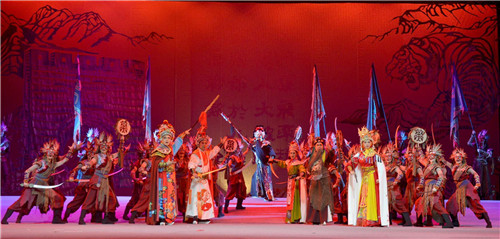
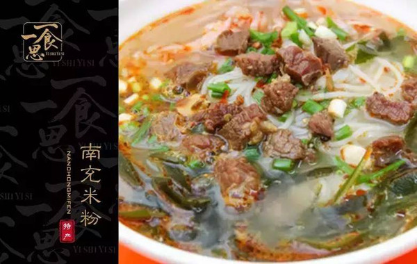
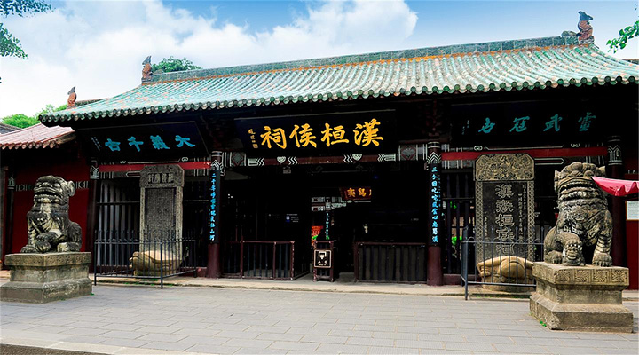

| 美 丽 南 充 | ||||||
|
文化活动往期活动 
三国文化之源——南充，春节前后，全市将开展丰富多彩的文化活动，给市民带来春节文艺“盛宴”，大家可“照单”观赏！ ◆1月22日至23日，“南充市2020年新春综艺晚会”将在高坪区文化中心上演。 ◆ 1月25日至26日，顺庆区将在市西山广场搭台进行新春大型文艺演出，通过歌舞、小品、相声、等形式展现文化发展成果。 ◆2月8日，顺庆还将举行“欢乐祥和·民俗闹春”顺庆区第四届非遗迎春活动。 ◆从本月初开，南充春节庙会系列活动启动，南充文庙、清泉寺、老君山等地开展丰富多彩的活动。 ◆鼠年正月十五，顺庆区共兴镇还将举行“蛴蟆节”，开展文艺演出、送蛴蟆祈福等活动。
|
特色美食
南充市地处嘉陵江中游、四川盆地中北部，川东北的经济、文化、交通、商贸、物流和信息中心城市。南充是中 国优秀旅游城市、国家园林城市、全国清洁能源示范城市，有"绸都"和"果城"之美誉。特色美食有川北凉粉、大通 凉粉、松花皮蛋、营山板鸭、河舒豆腐、张飞牛肉、白糖蒸馍、顺庆卤鸭子、南部肥肠、蓬安方锅盔、西充狮子糕、 腊肉火锅、保宁牛羊杂碎、东观辣子鸡、丝丝鳝鱼面、辣子脆肠、干烧四季豆、顺庆羊肉粉、凉热串串等。
|
旅游景点
南充历史悠久，公元前202年汉朝汉高祖刘邦设安汉伊始，是一座拥有2200多年建城历史的历史文化名城，被誉 为嘉陵江畔的一颗璀璨明珠，闻名遐迩丝绸之都，久负盛名水果之乡。 中国优秀旅游城市，国家园林城市，四川省 区域中心城市，成渝经济区北部中心城市，川东北也是四川第二大经济、文化、交通、商贸和信息中心，享有“川 北心脏”之称。
|
| 图片文字源自网络，侵权必删除 |